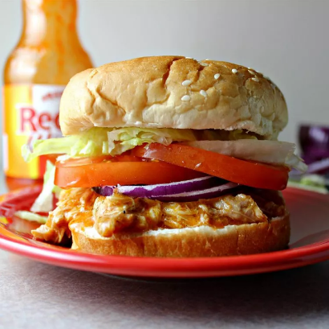
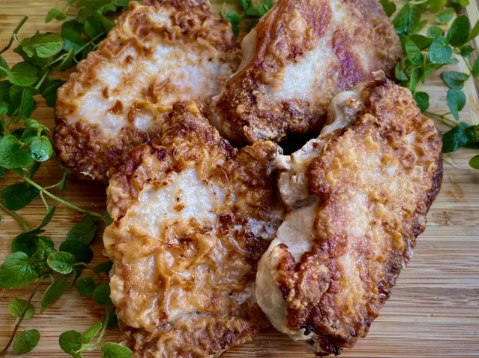
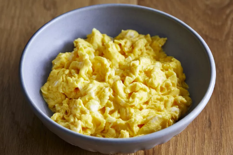

Odin Recipes
This is a website project under the
"TheOdinProject Web Development Curriculum"
Created by Alexis Aubrey Brusola
-

Fruit and Yogurt Smoothie Recipe
This yogurt smoothie recipe is delicious! You may substitute the strawberries for any other berries or fruit.
-

Slow Cooker Buffalo Chicken Sandwiches
This crackpot Buffalo chicken is great for hearty sandwiches that will please those who love Buffalo chicken wings.
-

Pan-Fried Pork Chops
Few things are as easy to prepare as these pan-fried boneless pork chops. They take only minutes to prepare!
-

Fluffy Microwave Scrambled Eggs
Use your microwave to make light and fluffy scrambled eggs for a quick and easy breakfast to start your day.